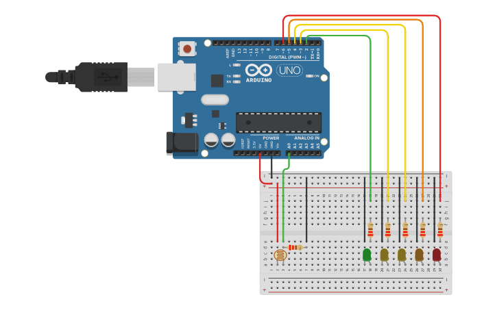

PROJECT 10: LIGHT METER
5-Segment Visual Bar Graph
Mission Brief
A single LED can only say "Yes" or "No". A bar graph can say "How Much". In this project, you will build a 5-segment light meter that acts like a volume visualizer for light intensity.
Key Components
- Arduino Uno R3
- LDR Sensor
- 5x LEDs (Mixed Colors)
- Resistors
- Jumper Wires
Circuit Diagram

Pin Connections
| Arduino Pin | Component Connection |
|---|---|
| Pin A0 | LDR Sensor Signal |
| Pin 2 | LED 1 (Red/Low) |
| Pin 3 | LED 2 (Orange) |
| Pin 4 | LED 3 (Yellow) |
| Pin 5 | LED 4 (Yellow) |
| Pin 6 | LED 5 (Green/High) |
Step-by-Step Instructions
- Build the LDR Voltage Divider circuit connected to Pin A0.
- Place 5 LEDs in a row on the breadboard.
- Connect the Cathode (Short Leg) of every LED to the Negative Rail via a resistor.
- Connect the Anodes (Long Legs) to Pins 2, 3, 4, 5, and 6 in order.
- Connect the Arduino GND to the breadboard Negative Rail.
- Upload the code below.
Arduino Code
/* Project 10 - 5-Segment Light Meter
* Maps light intensity (0-1023) to a bar graph (0-5 LEDs).
*/
const int sensorPin = A0;
// Array of LED pins: {2, 3, 4, 5, 6}
const int ledPins[] = {2, 3, 4, 5, 6};
const int ledCount = 5;
void setup() {
// Initialize all LED pins as outputs
for (int i = 0; i < ledCount; i++) {
pinMode(ledPins[i], OUTPUT);
}
Serial.begin(9600);
}
void loop() {
int sensorReading = analogRead(sensorPin);
Serial.println(sensorReading);
// Map the sensor range (approx 0-800) to the number of LEDs (0-5)
// You might need to adjust the '800' based on your room brightness
int ledLevel = map(sensorReading, 0, 800, 0, ledCount);
// Loop over the LED array
for (int i = 0; i < ledCount; i++) {
// If the LED's index is less than the calculated level, turn it ON
if (i < ledLevel) {
digitalWrite(ledPins[i], HIGH);
} else {
// Otherwise turn it OFF
digitalWrite(ledPins[i], LOW);
}
}
delay(50); // Fast update
}
How It Works
- The map() Function:
-
Scaling Data:
The sensor gives 0-1023. We have 5 LEDs. The functionmap(value, 0, 800, 0, 5)automatically does the math to convert the big number into a small scale (0 to 5). -
Dynamic Loop:
Instead of writing `if/else` for every single LED, we use a `for loop` to scan through the array. If the loop index is lower than the signal level, turn that LED on. - Hardware Concept:
-
Bar Graph:
This is the same logic used in battery indicators on phones or volume bars on stereos. More signal = More lights.
Expected Output
Dark Room: All LEDs OFF.
Dim Light: 1 or 2 LEDs ON (Red/Orange).
Bright Light: All 5 LEDs ON (up to Green).
The bar moves up and down responsively as you wave your hand over the sensor.
What You Learned
- How to use the powerful `map()` function to scale data.
- Controlling arrays of components efficiently.
- Creating visual feedback systems for analog data.
Next Steps / Extension Ideas
Invert the logic to make a "Shadow Meter" (lights go up as it gets darker). Or replace the LEDs with a piezo buzzer where the pitch gets higher as the light gets brighter!